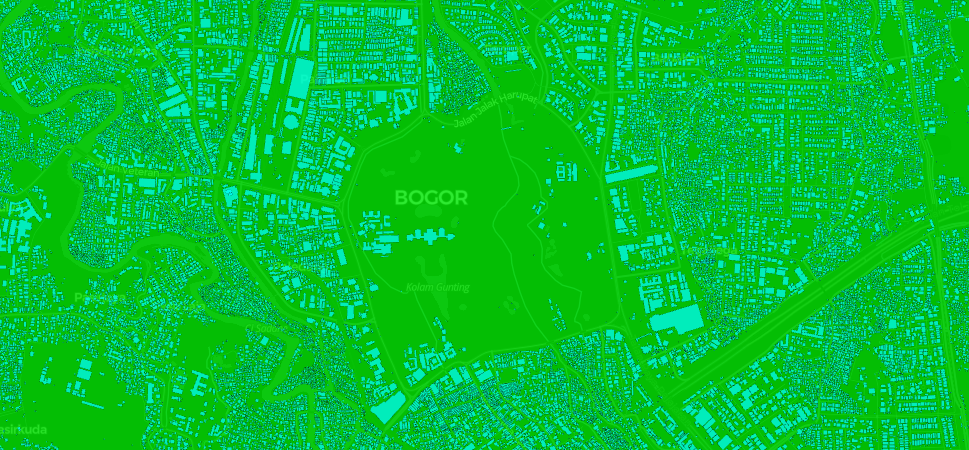

Core Services

Computer Vision for Geospatial Data
AI-powered object detection and segmentation for drone and satellite imagery analysis.
Explore More →
Location Intelligence & Spatial Analytics
Transform massive location datasets into business insights for market analysis and site selection.
Explore More →
Geospatial API Development
Custom APIs for geospatial data access, processing, and real-time spatial queries.
Explore More →
Interactive Geospatial Dashboards
Turn complex spatial analysis into intuitive dashboards for stakeholder decision-making.
Explore More →
Advanced Pattern Recognition
Cross-domain pattern recognition from fraud detection to satellite imagery time series analysis.
Explore More →
Satellite Imagery Analysis
Automated satellite data processing for vegetation monitoring, change detection, and environmental analysis.
Explore More →